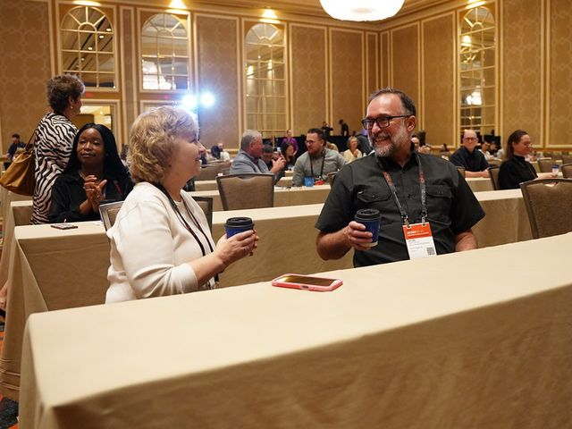
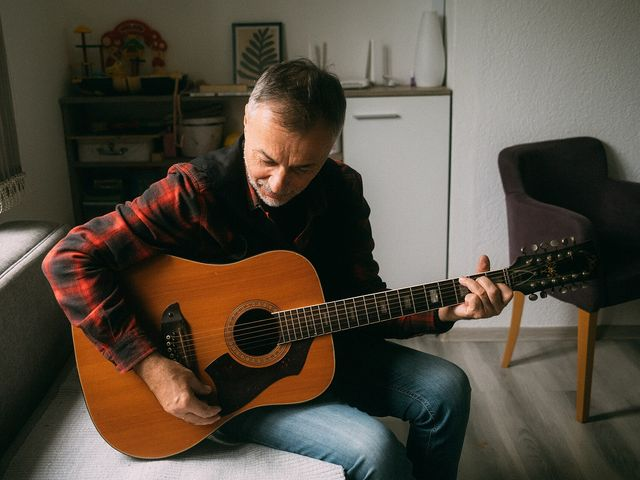
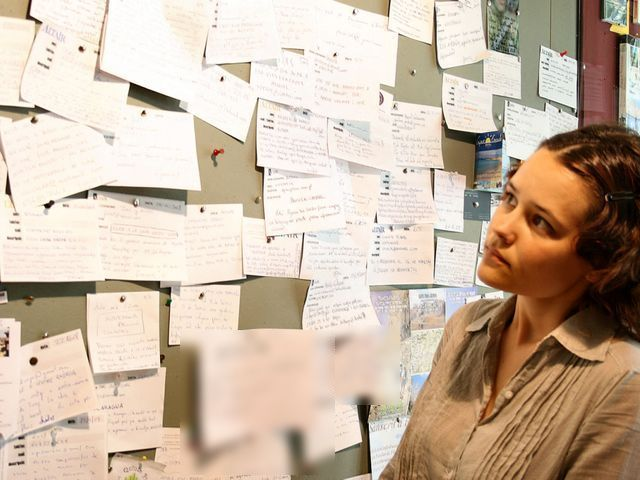

Sheet 1 / 8 · Lead-in · Before you start
Before you start
Activity 1 · Who do you meet at work every day — and what do you say to them?
3:00Look at the 6 situations and answer the question under each one.

Meeting a visiting foreign doctor at the airport
"How would you describe yourself so they can recognise you?"
Photo: Fabrice Florin, CC BY-SA 2.0 (Wikimedia Commons)

A nurse chatting with an elderly patient
"What kind of personality makes a good nurse?"
Photo: Direct Media, CC0 (StockSnap)

A department party to welcome new staff
"How would you invite a new colleague to the party?"
Photo: Fabrice Florin, CC BY-SA 2.0 (Flickr)

Meeting new colleagues at a medical conference
"What do you usually talk about when you first meet someone?"
Photo: ACRM-Rehabilitation, CC BY-SA 2.0 (Flickr), cropped

Doctors enjoying their hobbies after a shift
"What do you like doing in your free time?"
Photo: Shixart1985, CC BY 2.0 (Wikimedia Commons), cropped

The hospital noticeboard: looking for a flatmate or a lift
"What would you write in a notice to find a flatmate?"
Photo: Jorge Franganillo, CC BY 2.0 (Wikimedia Commons), cropped
Activity 2 · How many words do you already have for the 6 groups?
5:00For each group, type every English word or phrase that comes to mind (separated by commas).
Group 2Open group →
Personality — what kind of person you areWhat kind of person are you — and what are your colleagues like?
0
Group 3Open group →
Likes & free time — what you enjoy doingWhat do you like doing when you're off duty?
0
Group 4Open group →
Wants & plans — what you would like to doWhat's your job now — and what would you like to do in the next five years?
0
Group 5Open group →
Notices — sharing a flat, sharing a rideWhat do people write in a notice when they need a room or a lift?
0
Group 6Open group →
Invitations — inviting, accepting, decliningHow do you invite a colleague out — and how do you say yes or no?
0
0words so far